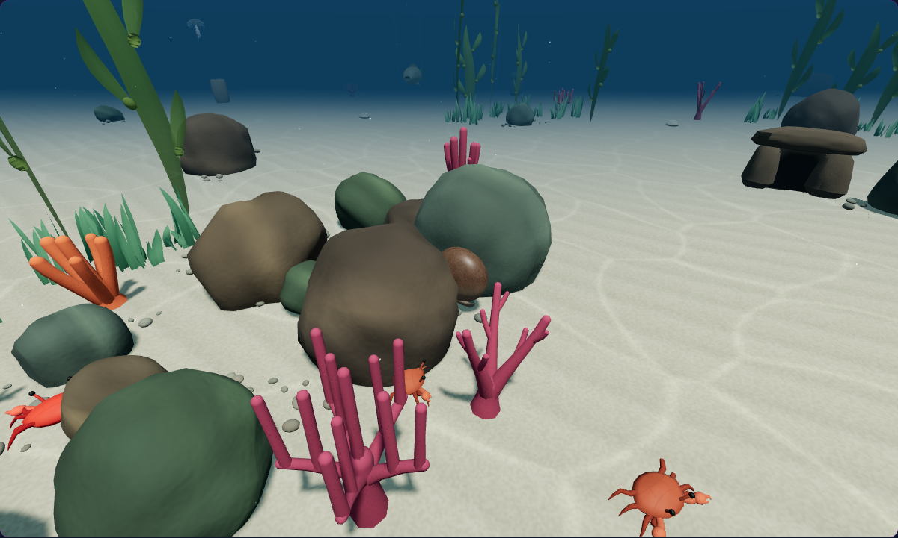

Living light over the sand
Gentle wave refraction lets the light bend and breathe over a stable seabed. Compare the existing drifting pattern with the new movement in the same native scene.
A capture could not load. Reload this page to retry.
The sand keeps its weight
Its ripples and grain stay fixed. Only the shallow light pattern deforms, keeping the environment grounded.
Motion follows the simulation
The light uses the existing water clock, pauses with the hunt and stays still when reduced motion is enabled.
The existing scene stays intact
A gap worth hiding in
Eligible octopuses automatically fold their arms in reachable, narrow gaps between reef rocks. Rock cover breaks a predator’s view from a blocked direction, while the open mouth remains exposed. Hunting uses the same cover: strike through a clear opening, or move around the rock.

Checked: native approach and retreat, stable arm compression, directional predator visibility, a blocked native strike, above-gap rejection, species eligibility and resource cleanup. Predator and prey positions are controlled test fixtures; this is a geometry and gameplay check, not a naturally occurring encounter.